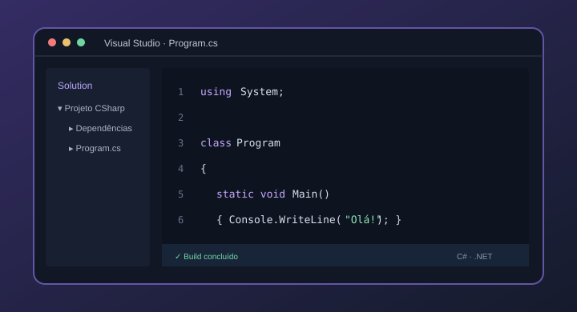
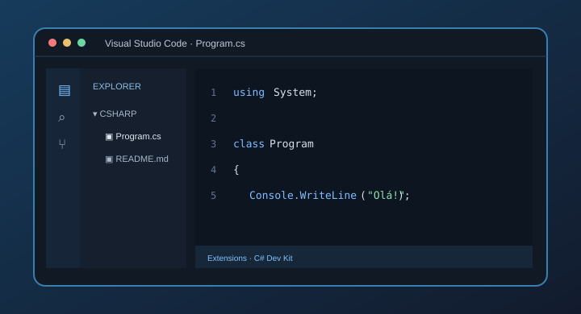
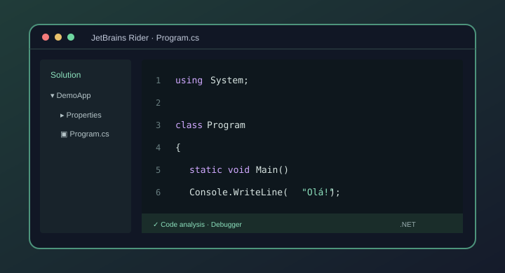

IDE
Visual Studio
Um ambiente integrado completo, desenvolvido pela Microsoft.
Uma visita interativa aos ambientes de desenvolvimento Visual Studio, Visual Studio Code e JetBrains Rider.
using System; class Program { static void Main() { Console.WriteLine( "Olá, turma!"); } }
É um conjunto de ferramentas que ajuda um programador a escrever, organizar, executar, testar e corrigir código.
Estas ferramentas tornam o desenvolvimento de programas mais organizado e eficiente. No caso do C#, podem ajudar a criar aplicações para diferentes plataformas.
IDE: reúne várias ferramentas de desenvolvimento num só programa.
Editor: centra-se na escrita de código e pode receber funcionalidades adicionais através de extensões.
Seleciona cada cartão para conhecer melhor um ambiente de desenvolvimento.

Um ambiente integrado completo, desenvolvido pela Microsoft.

Um editor leve e personalizável, que pode ser ampliado com extensões.

Um IDE da JetBrains com ferramentas avançadas para desenvolvimento .NET.
Carrega em “Explorar ambiente” para veres as características, vantagens e utilizações de cada ferramenta.
Apesar de permitirem trabalhar com C#, não funcionam exatamente da mesma maneira.
| Característica | Visual Studio | VS Code | Rider |
|---|---|---|---|
| Tipo | IDE | Editor | IDE |
| Suporte a C# | ✓ Integrado | ✓ Com extensões | ✓ Integrado |
| Depuração | ✓ | ✓ Com configuração | ✓ |
| Windows | ✓ | ✓ | ✓ |
| Linux | — | ✓ | ✓ |
| macOS | — | ✓ | ✓ |
Nota: a tabela apresenta as versões atuais para computadores. O Visual Studio completo é destinado ao Windows; o Visual Studio para Mac foi descontinuado em 2024.
Ideia principal: o Visual Studio e o Rider são IDEs completos. O VS Code é um editor que ganha funcionalidades através de extensões.
Este pequeno programa escreve uma mensagem na consola. O código C# é o mesmo, independentemente do ambiente utilizado.
using System;
class Program
{
static void Main()
{
Console.WriteLine("Olá, turma!");
}
}using System;Permite utilizar funcionalidades básicas da biblioteca System.
static void Main()Define o método de entrada deste exemplo.
Console.WriteLine()Apresenta uma mensagem na consola.
Responde às perguntas e vê quantas consegues acertar. Podes desafiar os teus colegas!
A escolha depende do tipo de projeto, das ferramentas necessárias e das preferências do programador. O mais importante é compreender que cada ambiente facilita o desenvolvimento de software à sua maneira.
Voltar ao início ↑